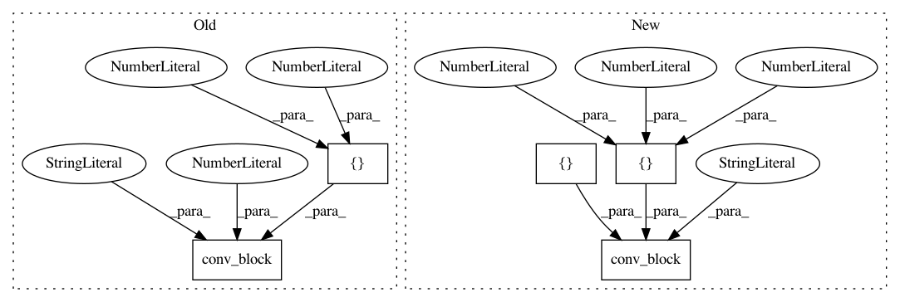

1d7b7345ab3254ed9b450dbd4208a3d63cb4963f,dataset/models/tf/linknet.py,LinkNet,_build,#LinkNet#,17
Before Change
encoder_output = []
for i, n_filters in enumerate([64, 128, 256, 512]):
net = self.downsampling_block(dim, net, n_filters, "downsampling-"+str(i), b_norm, **kwargs)
encoder_output.append(net)
for i, n_filters in enumerate([256, 128, 64]):
net = self.upsampling_block(dim, net, n_filters, "upsampling-"+str(i), b_norm, **kwargs)
net = tf.add(net, encoder_output[-2-i])
net = self.upsampling_block(dim, net, 64, "upsampling-3", b_norm, **kwargs)
layout = "cna" if b_norm else "ca"
layout_transpose = "tna" if b_norm else "ta"
net = conv_block(dim, net, 32, 3, layout_transpose, "output_conv_1", 2, **kwargs)
net = conv_block(dim, net, 32, 3, layout, "output_conv_2", **kwargs)
net = conv_block(dim, net, n_classes, 2, "t", "output_conv_3", 2, **kwargs)
logits = tf.identity(net, "predictions")
tf.nn.softmax(logits, name="predicted_prob")
After Change
layout = "tnacnat" if enable_batch_norm else "tacat"
net = conv_block(dim, net, [32, 32, n_classes], [3, 3, 2], layout, "output-conv",
strides=[2, 1, 2], **kwargs)
logits = tf.identity(net, "predictions")
tf.nn.softmax(logits, name="predicted_prob")
In pattern: SUPERPATTERN
Frequency: 3
Non-data size: 5
Instances
Project Name: analysiscenter/batchflow
Commit Name: 1d7b7345ab3254ed9b450dbd4208a3d63cb4963f
Time: 2017-11-09
Author: a.kozhevin@analysiscenter.ru
File Name: dataset/models/tf/linknet.py
Class Name: LinkNet
Method Name: _build
Project Name: analysiscenter/batchflow
Commit Name: 1973269eb8554237642cc5912f61269ae8f1ae1d
Time: 2017-12-11
Author: rhudor@gmail.com
File Name: dataset/models/tf/linknet.py
Class Name: LinkNet
Method Name: decoder_block
Project Name: analysiscenter/batchflow
Commit Name: b16131429ff9ad2952b44d9ba514d6811e98c6cf
Time: 2019-08-05
Author: d.mylzenova@analysiscenter.org
File Name: batchflow/models/tf/mobilenet.py
Class Name: MobileNet_v2
Method Name: block